地政学
パレルモはシチリア北岸の港として、イタリア本土、北アフリカ、マルタ、地中海航路を結びます。州都機能、移民、海上交通、文化遺産、治安政策が重なり、島の周縁性と地中海中心性を示す都市です。州都でもあります。
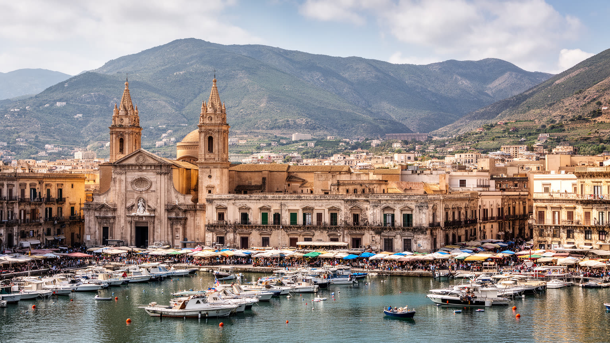
🇮🇹 イタリア / シチリア / World City Atlas
地中海の港、アラブ・ノルマンの遺産、市場の声、聖ロザリアの祭礼、反マフィアの市民記憶、移民と観光、乾いた夏の暮らしが近い距離で重なる都市です。
都市の骨格
パレルモは地中海を渡る人と商品を受け止め、アラブ、ノルマン、カトリック、近代国家、観光経済を重ねてきました。華やかな遺産の足元に、住宅、雇用、治安、気候の課題が残る都市です。
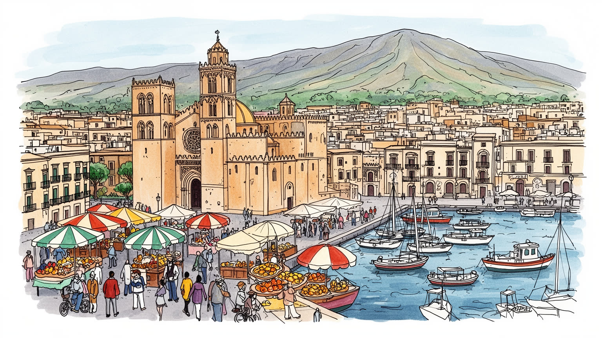
パレルモはシチリア北岸の港として、イタリア本土、北アフリカ、マルタ、地中海航路を結びます。州都機能、移民、海上交通、文化遺産、治安政策が重なり、島の周縁性と地中海中心性を示す都市です。州都でもあります。
行政、港湾、観光、食品、市場、大学、医療、建設が雇用を支えます。ですが若年失業、非正規、季節労働、低賃金、地下経済も目立ち、観光収入だけでは旧市街と郊外の生活不安を吸収しきれない都市です。家計に響きます。
アラブ・ノルマン建築、カトリック祭礼、聖ロザリア信仰、市場の食、シチリア語、劇場文化が街の層を作ります。信仰は観光の飾りではなく、病、貧困、家族、死者の記憶を受け止める日常の制度です。暦も作る力です。
旅行者は大聖堂、市場、海辺、劇場を巡るが、住民には老朽住宅、交通、暑さ、家賃、廃棄物、治安、若者の流出が切実です。都市の魅力は、観光の明るさと生活の摩擦を分けずに見る時に立ち上がります。現実も映します。
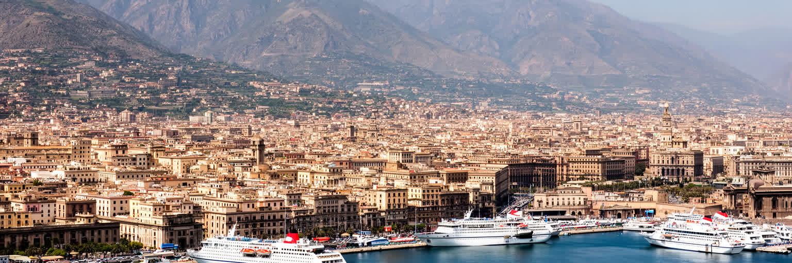
パレルモの港は、旧市街の端に置かれた観光的な水辺ではなく、シチリアを地中海の政治と経済へ接続する都市装置です。フェリーはナポリ、チヴィタヴェッキア、リヴォルノ、チュニジア方面への移動を支え、貨物、漁業、造船、クルーズ、軍事と行政の機能が同じ湾岸に重なります。旅行者には明るい海と山が印象に残りますが、埠頭では荷役、清掃、警備、税関、船員向けの店、早朝の市場物流が都市を動かしています。港は雇用を生む一方、騒音、排気、交通、海辺の再開発、短時間滞在型クルーズの収益偏りも生みます。北アフリカや島々へ開く位置は、移民、海難、国境管理、救助の問題を都市の日常へ近づけます。港を読むことは、パレルモを辺境の古都ではなく、南北の移動が交差する現代の接点として見ることです。海に面した広場の開放感とフェンス越しの作業場を同時に見る時、この都市の地中海性は景色ではなく、労働、制度、移動、記憶の束として現れます。港湾の将来は、物流効率だけでなく、市民が海へ近づける公共空間、汚染を抑える技術、島内鉄道や道路との接続にも左右されます。海から来る富を旧市街の修繕や若者の仕事へどう回すかも、港町としての成熟を測る問いです。港と中心部の間に歩きやすい道が増えれば、観光の利益は短い寄港で終わらず、商店、劇場、市場へ届きやすくなります。逆に港が孤立すれば、海は目の前にあっても都市生活から遠いまま残ります。
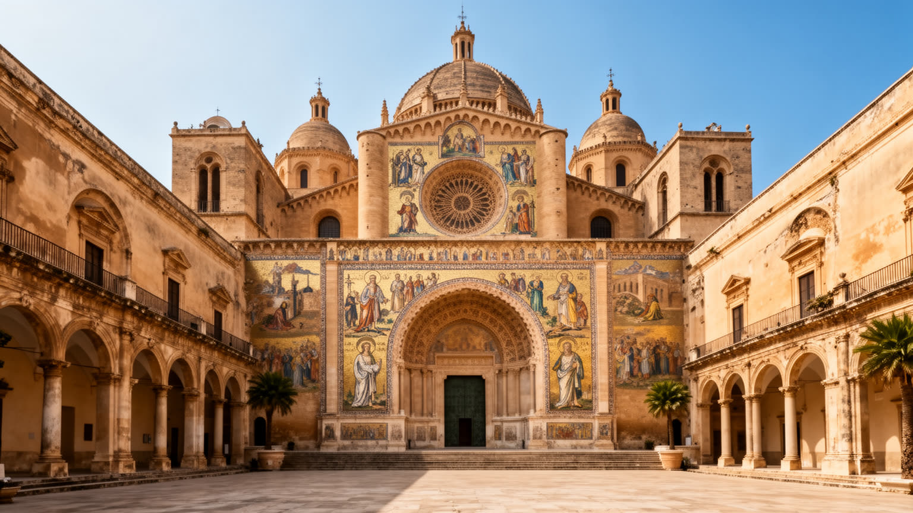
パレルモの都市像を決定づけるのは、アラブ、ビザンツ、ノルマン、カトリックの要素が混ざり合った建築と記憶です。大聖堂、パラティーナ礼拝堂、ノルマン王宮、サン・ジョヴァンニ・デッリ・エレミティ、周辺の聖堂群は、単なる様式の折衷ではありません。地中海をめぐる征服、共存、翻訳、宮廷文化、職人技、宗教的権威が石、アーチ、モザイク、中庭に刻まれています。世界遺産として整備されることで保存と観光は進みますが、遺産は住民の生活空間の中にあり、交通、家賃、店舗、学校、教会行事と切り離せません。美しい建築を「寛容の証拠」とだけ読むと、支配の暴力や社会の階層差を見落とします。反対に対立だけで読むと、職人と学者が異なる技術を都市へ持ち込んだ創造性が見えなくなります。パレルモの遺産は、地中海世界が純粋な文化圏ではなく、翻訳され、奪われ、受け継がれ、再利用される場所でしたことを示します。観光客が眺める黄金の光の背後には、保存費、修復技術、宗教利用、住民の動線をどう折り合わせるかという現在の課題もあります。修復された空間が高級な消費へ偏れば、遺産は生活から離れてしまいます。学校教育や地域の案内がこの複雑な歴史を丁寧に伝える時、建築は写真映えする背景ではなく、都市が多様な記憶を抱えて生きるための教材になります。遺産の周囲で暮らす人が説明や管理に参加できるかも大切で、保存は専門家だけの作業ではなく、街の共有責任でもあります。
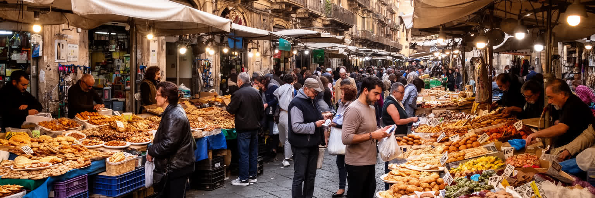
バッラロ、ヴッチリア、カーポの市場は、パレルモの観光名所である前に、旧市街の食卓と小商いを支える日常の舞台です。魚、柑橘、野菜、パネッレ、アランチーネ、内臓料理、菓子、パン、香辛料が並び、油の匂い、海産物の湿り気、声の大きい売り口上が路地に残ります。屋台料理は旅行者にとって刺激的な体験ですが、住民には安く食べる方法、仕事帰りの軽食、家族の買い物、近所づきあいでもあります。市場は観光化で収益を得る一方、家賃上昇、夜間営業、廃棄物、衛生、短期滞在者向けの価格、地元客の減少という摩擦を抱えます。働く人の多くは早朝から仕入れ、重い荷を運び、天候や季節に売上を左右されます。食文化を都市の誇りとして語るなら、その味を支える労働と低所得層の食の安全も見なければなりません。パレルモの市場は、古い地中海の記憶を保存する博物館ではなく、移民の店、若い料理人、観光客、常連の高齢者が価格と場所をめぐって交渉する生きた街路経済です。市場の買い物かご、安い衣料、携帯修理、露店の菓子は、都市の多層性を具体的に伝えます。近年は食べ歩きツアーや動画で名物が広がりますが、人気が一部の商品に集中すると、普通の青果や魚を買う場所が縮むこともあります。市場を守るとは、名物を売ることだけでなく、住民が毎日の食材を買える価格と信頼を残すことでもあります。子どもが親と買い物をし、店主が客の家族を知る関係は、観光では測れない社会資本です。
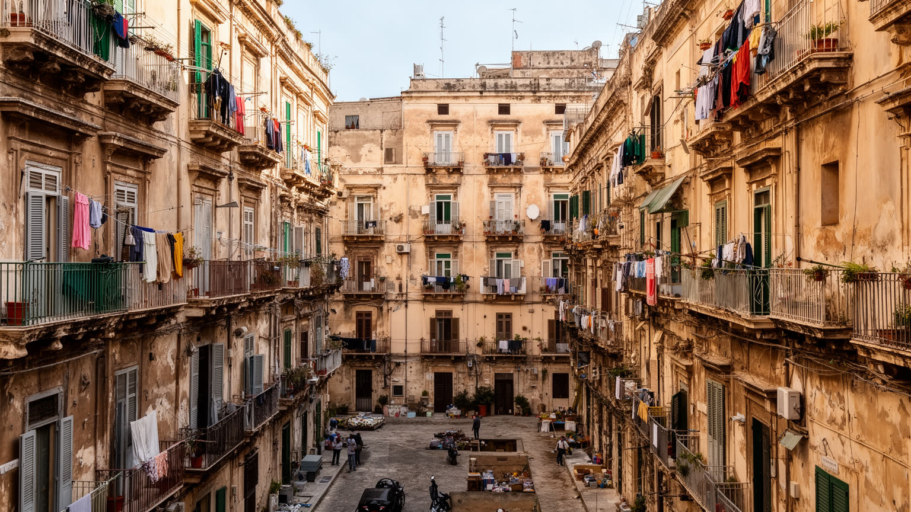
パレルモを語る時、マフィアの歴史は避けられません。しかし都市を犯罪の記号だけに閉じ込めると、住民の抵抗、司法、学校、市民運動、商店の努力を見失います。コーザ・ノストラは建設、政治、恐喝、麻薬、地域支配を通じて都市の制度を深く傷つけ、裁判官ジョヴァンニ・ファルコーネやパオロ・ボルセリーノらの殺害は、イタリア社会に大きな衝撃を与えました。ですがその記憶は暗い過去として保存されるだけではありません。反マフィア教育、追悼行事、被害者家族の活動、恐喝に抵抗する店舗、若者の文化活動、地元紙やテレビの報道は、都市の公共性を作り直す実践になっています。観光客がこの歴史を消費する時には注意が必要です。暴力の場所を刺激的な物語として巡るだけでは、沈黙を破るために危険を負った人びとの意味を薄めてしまいます。パレルモの市民記憶は、犯罪への恐怖と同時に、法と連帯を日常へ戻す努力の記憶です。治安は警察だけの仕事ではなく、学校に通い、店を開き、広場で集まり、脅しに従わない選択を支える社会の厚みによって守られます。都市の尊厳は、暴力を否認しないことから始まります。若者が地元を誇れる仕事や文化の場を持てるかも重要です。記憶が追悼で止まらず、公共調達、商店街、教育、地域福祉の改善へつながる時、都市は過去の支配から少しずつ距離を取れます。記念碑や裁判所の周辺だけでなく、普通の店が脅しを拒み、学校で歴史を学ぶ時間にも、市民記憶は続いています。
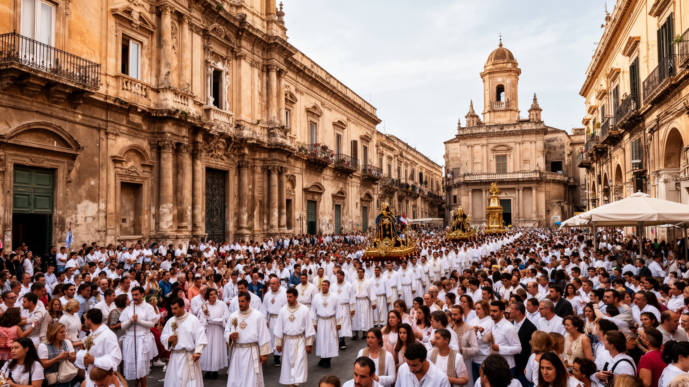
パレルモの宗教生活は、大聖堂や聖堂群の建築美だけでは理解できません。守護聖人サンタ・ロザリアへの信仰、夏のフェスティーノ、行列、ろうそく、家族の祈り、葬儀、近所の祭壇は、都市の時間を今も整えています。聖ロザリアの物語は疫病からの救済と結びつき、病、貧困、死、家族の不安を受け止める言葉として住民に共有されてきました。祭礼は観光客を引き寄せ、夜の街を劇場のように変えますが、準備には教会、行政、商店、警備、清掃、交通、ボランティアの労働が必要です。祝祭の明るさは、普段の生活課題を一時的に覆い隠すこともあれば、住民が同じ街に属している感覚を回復させることもあります。パレルモではカトリックの儀礼の背後に、イスラム期やユダヤ人社会の記憶、移民が持ち込む別の宗教性も重なります。宗教を過去の装飾として見るのではなく、都市が不安を語り、死者を悼み、困窮者を支え、公共空間を一時的に共有する制度として見る必要があります。祭礼の音、光、人混みは、パレルモが歴史都市であると同時に、今も祈りによって結ばれる生活都市であることを示します。観光化が進むほど、祈る人と見る人の距離をどう保つかも問われます。教会の扉、路地の祭壇、家族の誓願を尊重する姿勢が、都市の宗教文化を単なる演出から守っています。祝祭後の清掃や交通整理まで含めて見ると、信仰は感情だけでなく、都市を共同で維持する実務でもあります。

パレルモの旧市街は、観光客にとって迷い込むのが楽しい路地の連続ですが、住民にとっては老朽住宅、湿気、階段、交通、駐車、廃棄物、騒音、治安不安を抱える生活空間でもあります。バルコニーの洗濯物や中庭の会話は親密な都市像を作る一方、修繕費を負担できない家族、空き家、短期賃貸への転用、低所得世帯の押し出しも起きります。中心部が観光で注目されるほど、建物の外観は整えられ、飲食店や宿泊施設は増えますが、日用品店、学校、診療所、子どもの遊び場が残るかは別の問題です。郊外には戦後の住宅地や新しい集合住宅が広がり、中心に比べて広さを得られる場合もありますが、公共交通、雇用、文化施設への距離が生活時間を奪います。パレルモの暮らしを読むには、教会や市場だけでなく、バス停、階段の照明、雨漏り、医療への移動、夏の暑さをしのぐ日陰を見る必要があります。美しい旧市街を守ることは、壁を保存するだけでは足りません。住民が住み続けられる家賃、修繕、公共サービス、安全な歩行空間を整えることが、都市の記憶を本当に生かす条件です。近所の店が閉じ、短期滞在者向けの部屋だけが増えれば、路地の声は残っても生活の基盤は薄くなります。住宅政策、公共交通、福祉、学校を一緒に整えることが、観光都市ではなく住む都市としての力を保ちます。子どもが近くで遊び、高齢者が買い物へ出られるかという小さな条件が、旧市街の未来を大きく左右します。
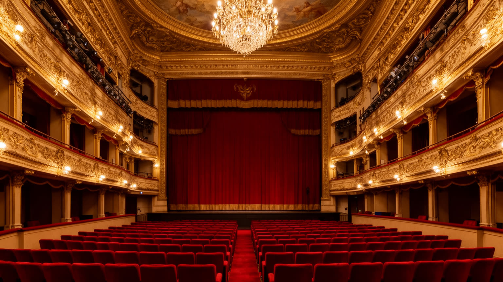
パレルモの文化は、市場の声や聖堂の鐘だけでなく、劇場、音楽、大学、映画、文学、現代美術、夜の広場によっても形づくられます。マッシモ劇場はヨーロッパ有数の歌劇場として都市の象徴になり、オペラやコンサートはシチリアの州都が持つ文化的な自負を示します。ですが劇場文化は上流の娯楽としてだけ存在するわけではありません。合唱、音楽教育、舞台技術、照明、衣装、清掃、チケット販売、周辺の飲食店まで、多くの仕事と学びを生みます。パレルモ大学や音楽院は若者を集め、ヴッチリアやカルサの夜はライブ、バー、路上の会話で観光と地元の時間を混ぜます。旧市街の再生では、空き建物を使った文化活動、若者の演劇、写真、社会的協同組合のプロジェクトが、反マフィアの市民性や移民との共生と結びつくこともあります。一方で、文化施設が中心部の価値を上げるほど、家賃上昇や観光向け消費が住民を圧迫する危険もあります。パレルモの文化を読むには、豪華な劇場の客席と、路地の稽古場、学校、ラジオ、サッカーを語るバールを同じ回路として見る必要があります。音楽や舞台は、貧困や暴力の記憶を直接解決しませんが、都市を別の言葉で語り、若者が自分の声を持つ場所を作ります。文化政策が観光イベントに偏ると、日常的に学び、練習し、失敗できる場所は不足します。子どもが劇場に触れ、移民の若者が表現を持ち、地域の高齢者が参加できる仕組みがあってこそ、文化は都市の共有財産になります。
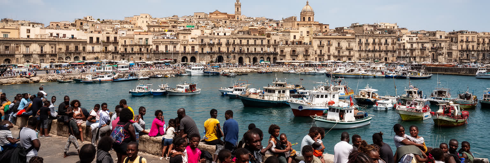
パレルモは、地中海を渡る移動の歴史を長く抱えてきた都市です。シチリア人は貧困や雇用不足から本土、北欧、アメリカへ移住してきましたし、現在の街には北アフリカ、南アジア、東欧、サハラ以南アフリカから来た人びとの商店、食、言葉、祈りが加わっています。港と空港は観光客だけでなく、家族を養うために働く移民、難民申請者、季節労働者、学生を運びます。移民は市場、介護、建設、清掃、飲食、農業、物流で都市経済を支えますが、住居、在留資格、差別、低賃金、学校での言語支援、医療へのアクセスに直面します。パレルモは寛容な地中海都市として語られることがありますが、その言葉が現実になるかは、行政、学校、教会、NPO、近所の関係がどこまで生活を支えられるかにかかっています。移民の存在は、アラブ・ノルマン遺産を遠い過去としてではなく、現在の多文化的な都市課題として読み直させます。市場で交わされる言葉、路地の店、子どもの学校生活、礼拝の場所を見ると、パレルモの地中海性は観光のイメージよりずっと具体的です。移動する人びとは都市に摩擦ももたらしますが、同時に労働力、料理、音楽、家族の物語を通じて街を更新しています。受け入れを美談にするだけでは不十分で、搾取的な仕事、過密な住まい、行政手続きの遅れを減らす制度が必要です。共生は雰囲気ではなく、学校、住宅、労働、医療で毎日試されます。
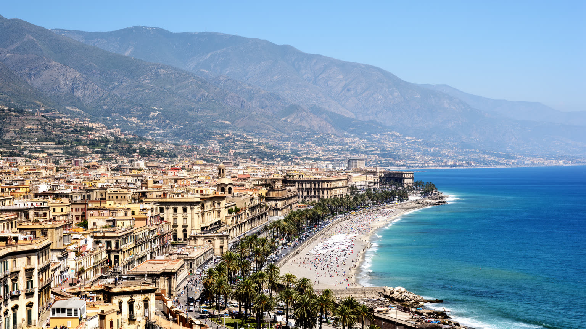
パレルモの気候は温暖な地中海性で、夏は乾き、冬に雨が多いです。海風と山並みは街に開放感を与えますが、夏の熱波、干ばつ、水不足、山火事、豪雨時の排水、海岸の汚染は住民の日常に強く影響します。観光客には青い海と明るい光が魅力になる一方、屋外で働く市場の店員、港湾労働者、清掃員、建設労働者、高齢者、子どもにとって暑さは健康リスクです。旧市街の細い通りは日陰を作ることもありますが、風が抜けにくく、老朽住宅では断熱や冷房の負担が重いです。海岸部の再生や公園整備は市民の休息を広げ、モンデッロの海水浴、フォロ・イタリコの散歩、週末のサッカーや自転車の時間を支えますが、観光用の水辺だけが整い、周縁地区の環境改善が遅れれば格差は残ります。気候変動は、パレルモの水、食料価格、電力、観光シーズン、健康、都市緑化を同時に揺さぶります。都市計画には、木陰、飲水、公共トイレ、涼める広場、排水、廃棄物管理、沿岸保全が欠かせません。地中海の光は都市の強い魅力ですが、その光の下で人が安全に歩き、働き、休めるかが、これからのパレルモの持続性を測る基準になります。涼しさと水は、景観ではなく都市福祉の問題です。夏が長くなるほど、観光のピークも住民の疲労も重なります。学校、病院、市場、バス停に日陰と冷却の仕組みを増やすことは、気候適応であると同時に、弱い立場の人を守る社会政策でもあります。海岸へ行ける権利、清潔な水辺、山側の火災対策を結びつけて考えることが、気候時代の港町には求められます。
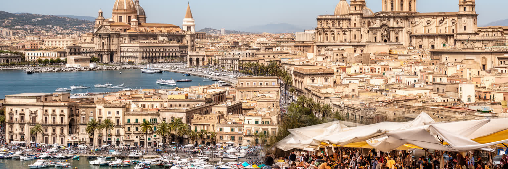
パレルモを世界都市の地図に置く意味は、経済規模の大きさだけでは説明できません。ここでは地中海港湾、シチリアの州都機能、アラブ・ノルマン遺産、市場の食、カトリック祭礼、反マフィアの市民記憶、移民、観光、住宅問題、暑熱が一つの旧市街と湾岸に凝縮されています。大聖堂や劇場を訪れ、市場で食べ、海を眺めるだけなら、パレルモは美しい南欧の旅先として記憶されます。しかしその背後には、若者の雇用不足、低所得世帯の住まい、港の労働、移民の不安定な生活、暴力の記憶、夏の気候リスクがあります。反対に、犯罪や貧困だけで都市を見ると、住民の誇り、食文化、信仰、教育、芸術、公共性を作り直す努力を取り逃がします。パレルモの核心は、輝かしい遺産と不安定な日常が同じ街路で重なり、互いを隠しきれないところにあります。都市を読むには、観光地図の点を結ぶだけでなく、誰がその場所で働き、誰が住み続け、誰が追い出され、誰が新しく加わるのかを見る必要があります。地中海の古都は過去の博物館ではなく、移動、記憶、気候、生活費をめぐって現在も更新される都市です。島の首都としてのパレルモは、ローマやミラノとは違う尺度で世界と結ばれます。港の船、移民の商店、巡礼の祭礼、反マフィアの教育、暑さへの適応を重ねると、都市の重要性は数字よりも生活の交差密度として見えてきます。